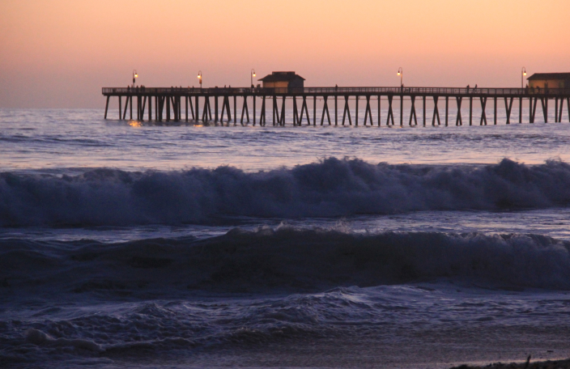
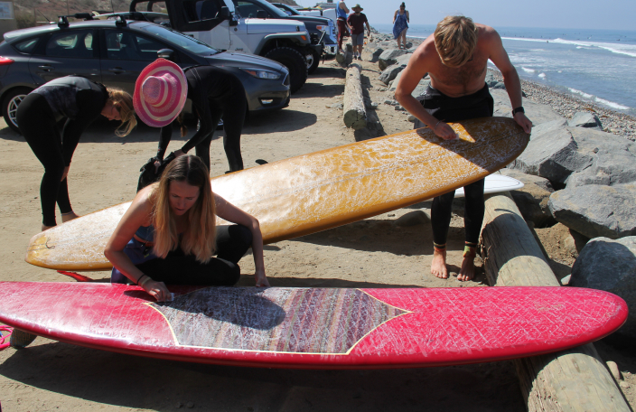
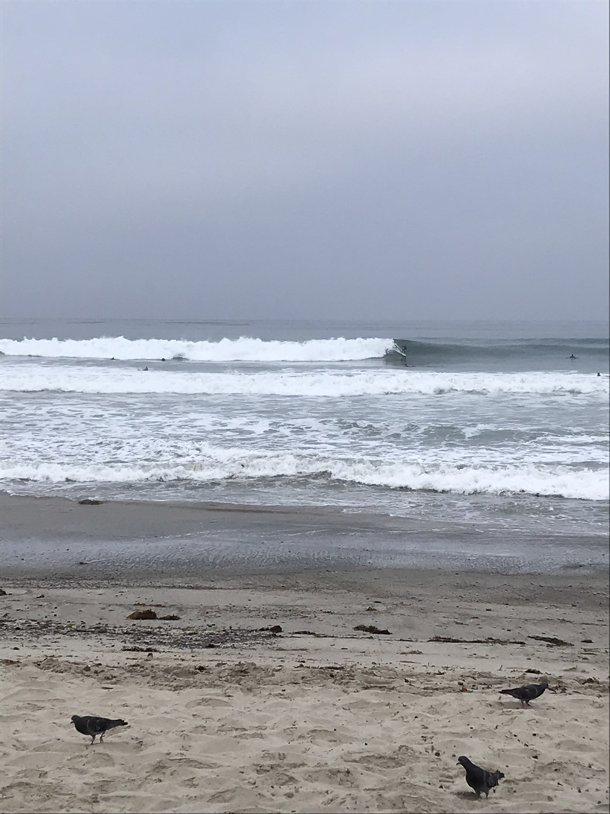
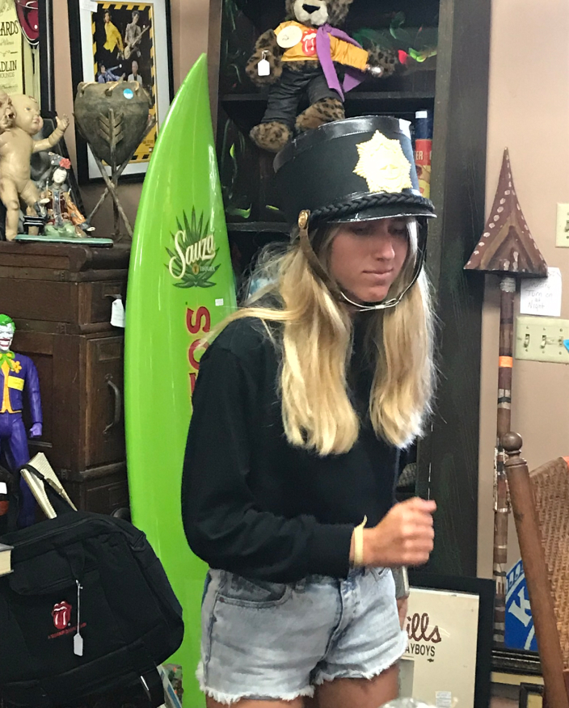
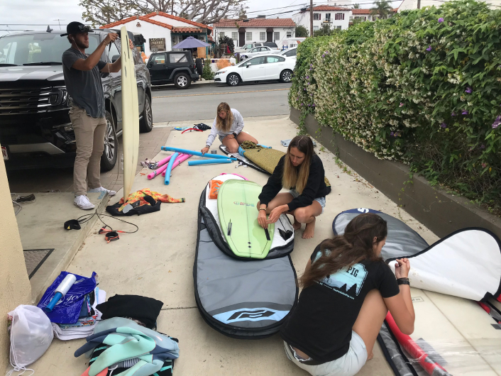
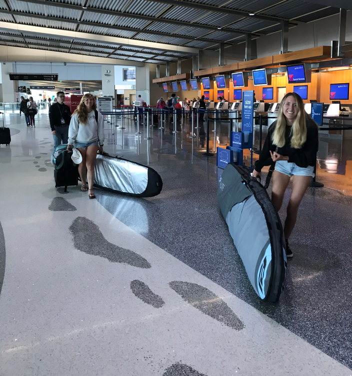
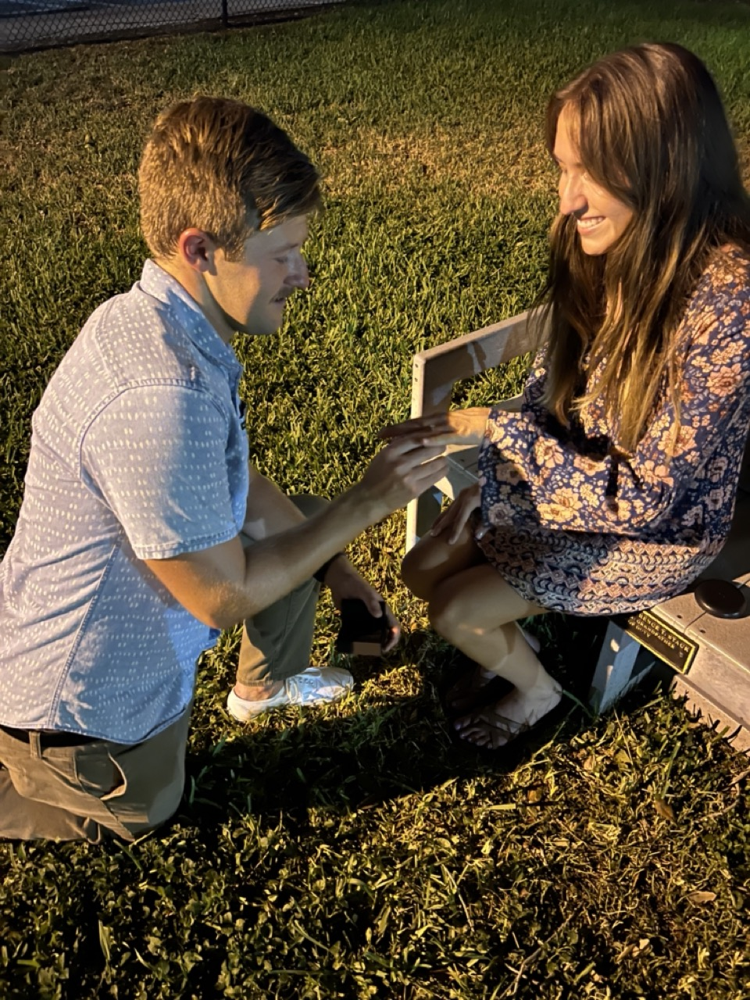

Hey! It’s Missy. I am so excited to marry my best friend with our favorite people around us! Some of you may be wondering: Why California? Well, it seems crazy, but Connor and I fell in love with each other on a surf trip to Southern California and it has been special to us ever since. Cheesy? Yeah, I know. But hey, we wouldn’t have wanted it to happen any other way! Let me tell you how it all went down.
The trip plan actually started out with four: myself, Sam, Toni, and Ryan. After crunching some numbers (and realizing there was a pull-out couch in our airbnb) we wanted to invite one more person to join us to help lower the total cost of the trip. What seemed like a simple decision to save money has truly changed our lives forever!
So, I sent a quick message to the FAU Surf Club chat to see if anyone was interested in joining us, and Connor was the first one to respond.
Stoked that we now had another friend to join the trip, we packed our board bags and were off that June of 2018.

When we arrived in San Diego, I took over the responsibility of driving what we soon started calling “The Spaceship” (AKA: a fully loaded Ford Expedition that we only got because the rental place ran out of everything else). It was on that trip that I received another nickname, “Turbo Turco,” one, for being obsessed with the turbo engine and two, for confidently whipping the gang around the SoCal canyons with it.
One of our very first priorities of being in San Clemente was to surf at my favorite longboard spot: San Onofre, a place that no one else in the group had experienced yet.

So, with wax on and wetsuits zipped, we surfed with each other and cheered one another on after a good wave, and it was overall just a blast.
Connor would constantly make sure that he was watching my waves, and would smile back at me with approval as I would paddle back out to the lineup saying, “That one was so fun!”
I would stare in awe as I watched my future husband glide down the face of a waist-high, 65-degree wave with style and ease.
No one really had to explain it. Connor and I were naturally drawn to one another, as we would walk much farther ahead from the rest of the group wherever we were headed, though I think the others walked slower on purpose because they, too, caught on to the vibes.

One morning, while Sam and I were sitting at T-Street beach watching Connor and Ryan surf the bigger waves, she turned to me and said, “You like him, don’t you?”
Shocked at her suggestion, I responded with, “Who, Connor?” as I hugged my knees knowing I had been caught.
“I see the way you look at him,” she says. “You’re definitely into him, and he’s obviously into you.”
And she was right. I was completely smitten by Connor on that trip as I got to know him more. And after talking with Connor about it while we were dating, he confirmed that he had joined the trip to get closer to me.

One of the best days was the last day of that trip. There was a classic car show happening in San Clemente on the main strip and the gang was having fun looking at the old woody’s and finding weird items in the thrift shops around town.
Once we all got back from the car show, it was time to pack up the surfboards for the journey back home.

At the San Diego airport before the group departed for home, Connor and I were inseparable. Both timid flyers, I suppose we got comfort knowing that we weren’t the only ones feeling anxious. There were a couple of moments where I laid my head on Connor’s shoulder, small moments that they will never forget.
Walking through the airport with 50-60 pounds of surfboard baggage (per person) was also a sight to see. Fellow travelers were probably getting a kick out of watching Sam and I struggling to drag our surfboard bags along as we made our way to the JetBlue counter to drop off the load. It’s not easy traveling with boards close to twice your size!

Two days after we returned from our trip, I was starting my first job out of college as a web developer (everything I learned on the job there has allowed me to build this wedding website!). After my first day of work, Connor met up with me at Delray Beach, and from there we walked together to Rocco’s Tacos to grab some dinner -- we didn’t know it then, but it was actually our first date!
After a great time at Rocco’s Tacos, we walked back towards the beach where we parked and decided to stop at a park called Veteran’s Park that sits just west of the bridge over the intracoastal on Atlantic Avenue. We found a bench to sit on and talked about life, our favorite surfers, and other things that I can’t remember (though I am sure that Connor remembers every detail).
After a while, we had our first kiss on that bench, and Connor carved our initials with the key to his old Scion XB.

Four years later, on my twenty-sixth birthday, Connor proposed to me on that very bench in that very park, and we were both so happy to think about the fact that we are truly going to be together forever.
Well, that's our story so far, and we are so happy to be adding more to it every day.
We are so excited to share our special day with you! Know that a love story doesn't exist without the love and support of our wonderful family and beautiful friends, and we are so grateful to have you in our lives. Let's do this thing!
Love, Missy <3